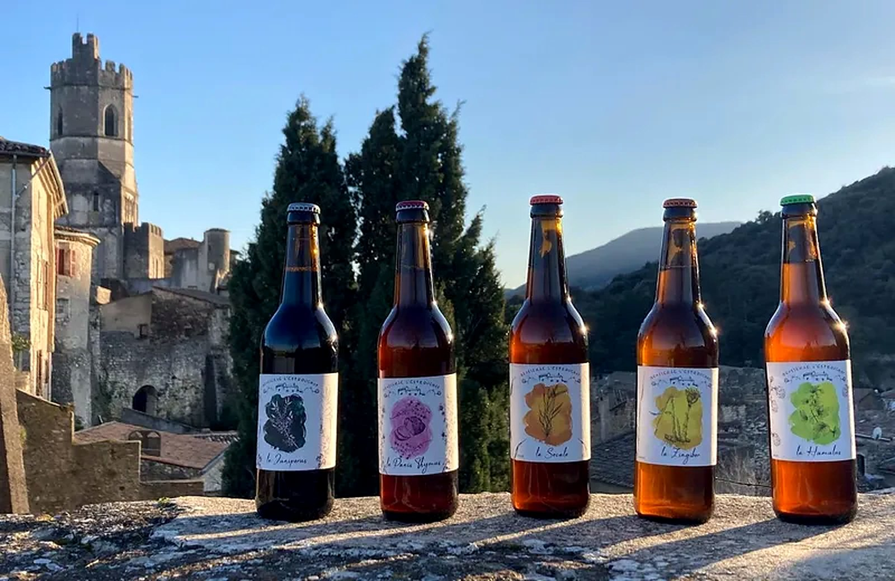
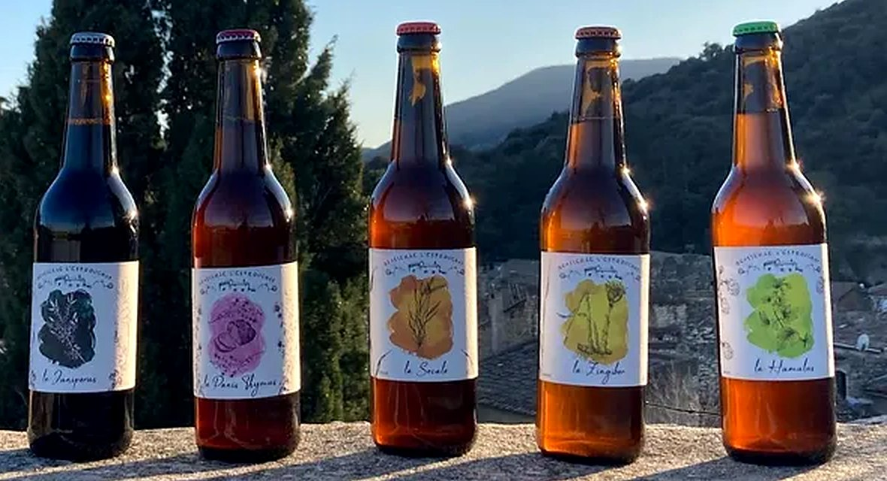
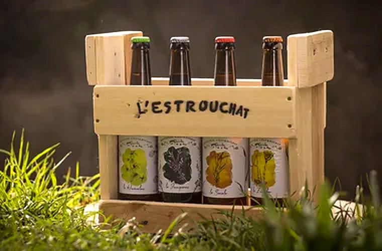

Bières artisanales et bio,
brassées à Viviers.
Six recettes, des céréales et des plantes bio de la région, et des bouteilles qu'on réutilise. Notre brasserie est au chemin des Sarrazins, à deux pas de la vieille ville.
Nos bières
Chaque bière porte le nom latin de la plante ou de la céréale qui lui donne son caractère. Toutes sont brassées avec des matières premières issues de l'agriculture biologique et vendues en bouteilles de 50 cl.

-
La Humulus
Le houblon (Humulus) en vedette : des notes florales, sans amertume marquée. La plus facile pour commencer.
-
La Zingiber
Brassée avec du gingembre frais. Vive et légèrement piquante, parfaite à l'apéritif.
-
La Karkanji
Une blanche à la fleur d'hibiscus, qui lui donne sa couleur et une pointe acidulée.
-
La Panis Thymus
Brassée avec 20 % de pain invendu et du thym. Une bière anti-gaspillage, ronde et parfumée.
-
La Secale
Un mélange d'orge et de seigle (Secale) toasté. Plus de corps, des notes de pain grillé.
-
La Juniperus
Malts torréfiés aux notes de chocolat et de café, relevés par des baies de genièvre.
Une petite brasserie, au pied de Viviers
L'Estrouchat est née en 2019 à Viviers, en Ardèche. Ici, la bière se fait en petites séries, à la main, avec des matières premières bio qui viennent autant que possible de la région Rhône-Alpes.
On aime les recettes qui racontent quelque chose du coin : du thym, du genièvre, du seigle, et même le pain invendu des boulangers, qui entre dans la Panis Thymus.
- Bio et local
- Malts, céréales et plantes issus de l'agriculture biologique, en circuit court quand c'est possible.
- Moins de déchets
- Les bouteilles sont réutilisées : rapportez-les à la brasserie.
- Fait ici
- Brassage, fermentation et mise en bouteille sur place, chemin des Sarrazins.

Venir nous voir
La boutique de la brasserie vous accueille toute l'année (du 2 janvier au 30 décembre). On vous fait goûter, on vous conseille, et vous repartez avec vos bouteilles.
| Lundi | Fermé |
|---|---|
| Mardi | Fermé |
| Mercredi | 10 h – 18 h |
| Jeudi | 10 h – 12 h |
| Vendredi | 10 h – 18 h |
| Samedi | 10 h – 18 h |
| Dimanche | Fermé |
2556 route de Bayne, chemin des Sarrazins
07220 Viviers
Vous cherchez nos bières près de chez vous ? Elles sont aussi vendues chez des commerçants de la région : appelez-nous, on vous indique le plus proche.
Contact
- Téléphone07 55 63 80 98
- E-mailbrasserie.estrouchat@
gmail.com - Facebookbrasserie.estrouchat
- Adresse2556 route de Bayne, chemin des Sarrazins, 07220 Viviers
Restaurateurs, cavistes, épiceries
Vous voulez proposer nos bières à vos clients ? Envoyez-nous un message avec le nom de votre établissement : on vous répond avec les tarifs et les conditions de livraison.